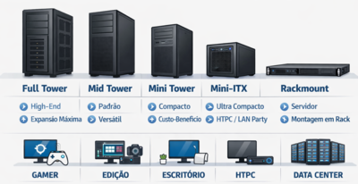
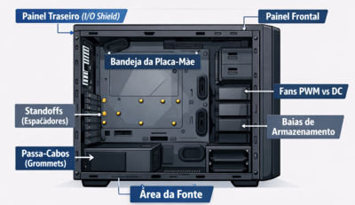
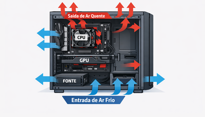
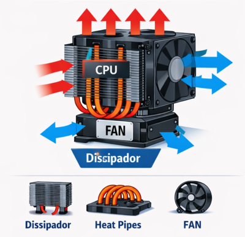
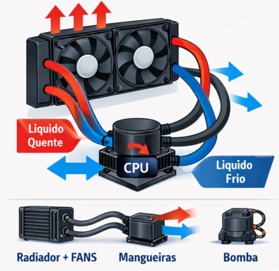
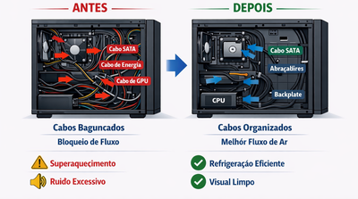

Oficina de Montagem e Conexão
AULA 08 — Gabinetes e Sistemas de Refrigeração
1. Introdução
O gabinete é a estrutura física que abriga e protege todos os componentes do computador. Mais do que uma caixa, ele define:
- O form factor das peças compatíveis (placa-mãe, fonte, coolers)
- O fluxo de ar que mantém os componentes em temperatura segura
- A organização dos cabos que impacta diretamente a manutenção e a refrigeração
Relação com as aulas anteriores: todos os componentes estudados — fonte, placa-mãe, CPU, RAM, armazenamento — são instalados dentro do gabinete. A qualidade da refrigeração determina se esses componentes operam dentro dos limites térmicos seguros.
2. Tipos de Gabinete

Por tamanho e compatibilidade
| Tipo | Placas-mãe compatíveis | Característica |
|---|---|---|
| Full Tower | ATX, E-ATX, mATX, ITX | Grande porte; máximo espaço interno; múltiplos radiadores |
| Mid Tower | ATX, mATX, ITX | Padrão mais comum; equilíbrio entre espaço e tamanho |
| Mini Tower | mATX, ITX | Compacto; limitações de refrigeração e expansão |
| Mini-ITX | ITX | Muito compacto; uso em HTPCs e sistemas dedicados |
| Rack | Servidores (padrão EIA-310) | Montagem em rack; ambiente corporativo e datacenter |
O Mid Tower ATX é o formato de referência para o curso — presente na maioria dos laboratórios e no mercado geral.
Materiais comuns
- Aço → resistência, peso maior, boa dissipação passiva
- Alumínio → mais leve, melhor dissipação, maior custo
- Plástico (ABS) → frontal decorativo; estrutura interna geralmente em aço
3. Componentes Internos do Gabinete
Estrutura principal

| Componente | Função |
|---|---|
| Bandeja da placa-mãe | Superfície de fixação da placa-mãe; possui furos padrão ATX/mATX/ITX |
| Standoffs (espaçadores) | Parafusos de latão que elevam a placa-mãe da bandeja, evitando curto-circuito |
| Baias de armazenamento | Espaços para HDs (3,5") e SSDs (2,5") |
| Área da fonte | Compartimento inferior (padrão atual) ou superior (gabinetes antigos) |
| Passa-cabos (grommets) | Aberturas com borracha para roteamento de cabos entre os compartimentos |
| Painel traseiro (I/O shield) | Placa metálica que cobre as saídas da placa-mãe no painel traseiro |
Os standoffs são críticos: instalar a placa-mãe sem eles ou na posição errada causa curto-circuito entre a PCB e o gabinete. Sempre verificar o posicionamento antes de fixar a placa.
4. Fluxo de Ar — Princípios Fundamentais
Por que o fluxo de ar importa
Componentes eletrônicos geram calor durante a operação. Se esse calor não for removido continuamente, a temperatura sobe até atingir o limite de proteção térmica — quando o sistema reduz o desempenho (thermal throttling) ou desliga automaticamente.
Pressão positiva vs. negativa
| Configuração | Como funciona | Vantagem | Desvantagem |
|---|---|---|---|
| Pressão positiva | Mais fans de entrada que de saída | Menos acúmulo de poeira | Pode reter calor localizado |
| Pressão negativa | Mais fans de saída que de entrada | Remove calor rapidamente | Acumula mais poeira (ar entra por frestas) |
| Pressão neutra | Entrada = saída | Equilíbrio geral | Depende do posicionamento correto |
Fluxo recomendado para Mid Tower ATX

O calor sempre sobe. Fans no topo do gabinete configurados como exaustão aproveitam a convecção natural — ar quente que já subiu é expelido com mais eficiência.
Posicionamento padrão dos fans
| Posição | Direção recomendada | Justificativa |
|---|---|---|
| Frontal | Entrada (intake) | Ar frio alimenta GPU e armazenamento |
| Traseiro | Saída (exhaust) | Remove ar quente próximo à CPU |
| Topo | Saída (exhaust) | Expele ar quente que naturalmente sobe |
| Inferior | Entrada (intake) | Alimenta a fonte (se ventilação inferior) |
5. Fans de Gabinete
Tamanhos comuns
| Diâmetro | Característica |
|---|---|
| 80 mm | Legado; ruído alto para mesma vazão |
| 120 mm | Padrão mais comum |
| 140 mm | Maior vazão com menos ruído; preferível quando o espaço permite |
| 200 mm | Gabinetes grandes; muito silencioso |
Um fan maior movimenta mais ar com menos rotações por minuto (RPM) — o que resulta em menor ruído. Para o mesmo desempenho térmico, 1 fan de 140 mm é mais silencioso que 1 fan de 120 mm.
Controle de velocidade
| Método | Pinos | Funcionamento |
|---|---|---|
| DC (voltage control) | 3 pinos | Velocidade controlada pela tensão fornecida |
| PWM (pulse width modulation) | 4 pinos | Velocidade controlada por sinal digital; mais preciso e estável |
PWM é o padrão atual. Permite que a placa-mãe ajuste a velocidade dos fans automaticamente conforme a temperatura dos sensores internos — silencioso em idle, mais rápido sob carga.
6. Sistemas de Refrigeração da CPU
6.1 Air Cooling (Resfriamento a Ar)
Composto por dois elementos: dissipador (heatsink) e fan.
Funcionamento:

| Tipo | Característica | Indicação |
|---|---|---|
| Cooler de caixa (stock) | Incluído com o processador; compacto | CPUs de baixo TDP (65W), uso básico |
| Tower cooler simples | Torre com 1 fan; heat pipes | CPUs até ~125W |
| Dual tower | Duas torres, 2 fans; alta eficiência | CPUs de alto TDP, overclocking |
Coolers de caixa Intel e AMD não são compatíveis entre si — o padrão de fixação (mounting) difere por socket. Sempre verificar compatibilidade de socket ao adquirir cooler aftermarket.
6.2 Water Cooling — Visão Geral
O water cooling substitui o ar pela água como meio de transferência de calor, aproveitando a maior capacidade calorífica do líquido.
Componentes de um sistema AIO (All-in-One):

| AIO | Custom Loop | |
|---|---|---|
| Instalação | Simples, plug-and-play | Complexa, montagem manual |
| Manutenção | Mínima | Periódica (fluido, reservatório) |
| Desempenho | Bom a excelente | Máximo |
| Indicação | Uso geral até alto desempenho | Entusiastas, overclocking extremo |
| Tamanho | Fans | Indicação |
|---|---|---|
| 120 mm | 1× 120 mm | CPUs de baixo TDP |
| 240 mm | 2× 120 mm | CPUs intermediárias |
| 280 mm | 2× 140 mm | CPUs de médio-alto TDP |
| 360 mm | 3× 120 mm | CPUs de alto TDP (i9, Ryzen 9) |
Water cooling não elimina o calor do sistema — transfere o calor da CPU para o radiador, onde fans o expelem para dentro do gabinete. Um gabinete com fluxo de ar ruim prejudica o desempenho mesmo com AIO.
7. Pasta Térmica — Procedimento
Função
A pasta térmica preenche as microimperfeições entre a superfície do IHS (tampa metálica da CPU) e a base do cooler, eliminando bolsas de ar que são péssimas condutoras de calor.
Tipos
| Tipo | Condutividade | Observação |
|---|---|---|
| Base de silicone | Baixa–média | Mais comum, fácil aplicação, não conduz eletricidade |
| Base metálica (líquido metálico) | Alta | Conduz eletricidade — risco se escorrer para o socket |
| Grafite (pad) | Média | Reutilizável; usado em notebooks |
Procedimento de aplicação
- Limpar superfícies: remover pasta antiga com álcool isopropílico 99% e flanela sem fio
- Aguardar secar completamente antes de aplicar a nova pasta
- Aplicar quantidade: uma gota do tamanho de um grão de arroz no centro do IHS
- Não espalhar manualmente: a pressão do cooler distribui a pasta uniformemente
- Fixar o cooler de forma cruzada (parafuso diagonal a diagonal) para pressão uniforme
- Verificar espalhamento: em sistemas transparentes ou após remoção futura, a pasta deve cobrir toda a área de contato sem extravasar
Excesso de pasta não melhora a condução — o excesso escorrega para os lados e pode atingir os pinos do socket ou componentes adjacentes. Menos é mais.
Pasta antiga ressecada perde eficiência com o tempo. Em manutenção de computadores com superaquecimento crônico, a troca de pasta térmica é o primeiro procedimento a realizar — antes de qualquer outra intervenção.
8. Cable Management
Por que organizar os cabos
Cabos soltos dentro do gabinete:
- Bloqueiam o fluxo de ar, aumentando a temperatura interna
- Dificultam manutenção e identificação de componentes
- Aumentam risco de contato acidental com fans em movimento
Princípios de cable management
1. Roteamento pela parte traseira da bandeja
A maioria dos gabinetes Mid Tower possui espaço entre a bandeja da placa-mãe e o painel lateral
traseiro. Passar os cabos por esse espaço mantém o interior frontal limpo.
2. Uso dos passa-cabos (grommets)
As aberturas com borracha no gabinete definem os pontos de passagem ideais para cada cabo. Respeitar
esses pontos facilita o roteamento natural.
3. Agrupamento por destino
- Cabos da fonte → agrupar por trilho e destino (ATX, EPS, SATA, PCIe)
- Cabos de dados SATA → roteados juntos, fixados próximos às baias
- Cabos do front panel → agrupados e fixados próximos ao conector F_PANEL
4. Fixação com abraçadeiras ou velcro
- Abraceadeiras de nylon: fixação permanente; usar com moderação para permitir futuras manutenções
- Velcro: preferível em ambientes de manutenção frequente
O que evitar
| Erro | Consequência |
|---|---|
| Cabos passando na frente dos fans | Ruído, dano ao fan, bloqueio de fluxo |
| Cabo de alimentação ATX 24 pinos solto | Bloqueia fluxo de ar lateral |
| Cabos SATA em excesso sem fixação | Dificulta manutenção, vibração em HDs |
| Fonte sem cabos modular cheios de cabos não usados | Acúmulo desnecessário de massa de cabos |

9. Diagnóstico Térmico
Sintomas de problema térmico
| Sintoma | Causa provável |
|---|---|
| Desligamento automático sob carga | CPU ou GPU atingiu temperatura de proteção (thermal shutdown) |
| Redução de desempenho sob carga (throttling) | Temperatura elevada — CPU reduz clock para diminuir calor |
| Reinicializações aleatórias | Instabilidade por temperatura; também pode ser fonte |
| Ruído excessivo dos fans | Sistema tentando compensar temperatura elevada aumentando RPM |
| Fans sempre em velocidade máxima | Sensor de temperatura indicando calor contínuo |
Temperaturas de referência em operação normal
| Componente | Idle | Carga | Limite de alerta |
|---|---|---|---|
| CPU (air cooling) | 30–45°C | 65–85°C | >95°C |
| CPU (water cooling AIO) | 25–40°C | 55–75°C | >90°C |
| GPU | 30–50°C | 70–85°C | >95°C |
| SSD NVMe | 35–50°C | 60–80°C | >85°C |
| HD | 30–40°C | 40–50°C | >55°C |
Ferramentas de monitoramento
| Ferramenta | Função |
|---|---|
| HWMonitor | Leitura de temperatura, tensão e RPM de todos os componentes |
| Core Temp | Temperatura por núcleo da CPU em tempo real |
| MSI Afterburner | Temperatura e clock da GPU; controle manual de fan |
| BIOS/UEFI | Temperatura da CPU e velocidade dos fans sem iniciar o SO |
Procedimento de diagnóstico térmico em bancada
- Monitorar temperaturas com HWMonitor em idle — identificar baseline
- Aplicar carga (Prime95 para CPU, FurMark para GPU) por 10–15 minutos
- Observar se a temperatura se estabiliza ou sobe continuamente
- Verificar RPM dos fans — fans parados ou muito lentos indicam problema de controle ou falha
- Abrir o gabinete e verificar: pasta térmica ressecada, fan do cooler parado, cabos bloqueando fluxo
- Em caso de superaquecimento confirmado: trocar pasta térmica como primeiro passo
Síntese da Aula
| Conceito | Ponto central |
|---|---|
| Tipos de gabinete | Mid Tower ATX é o padrão; tamanho define compatibilidade |
| Standoffs | Obrigatórios; ausência causa curto-circuito |
| Fluxo de ar | Frente/baixo → entrada; traseira/topo → saída |
| Fans PWM vs DC | PWM permite controle preciso por temperatura |
| Air cooling | Dissipador + heat pipes + fan; compatibilidade por socket |
| Water cooling AIO | Transfere calor para radiador; gabinete ainda precisa de boa ventilação |
| Pasta térmica | Grão de arroz no centro; não espalhar; trocar em manutenção |
| Cable management | Cabos na traseira; agrupados; longe dos fans |
| Diagnóstico térmico | HWMonitor + carga controlada; primeiro passo: pasta térmica |